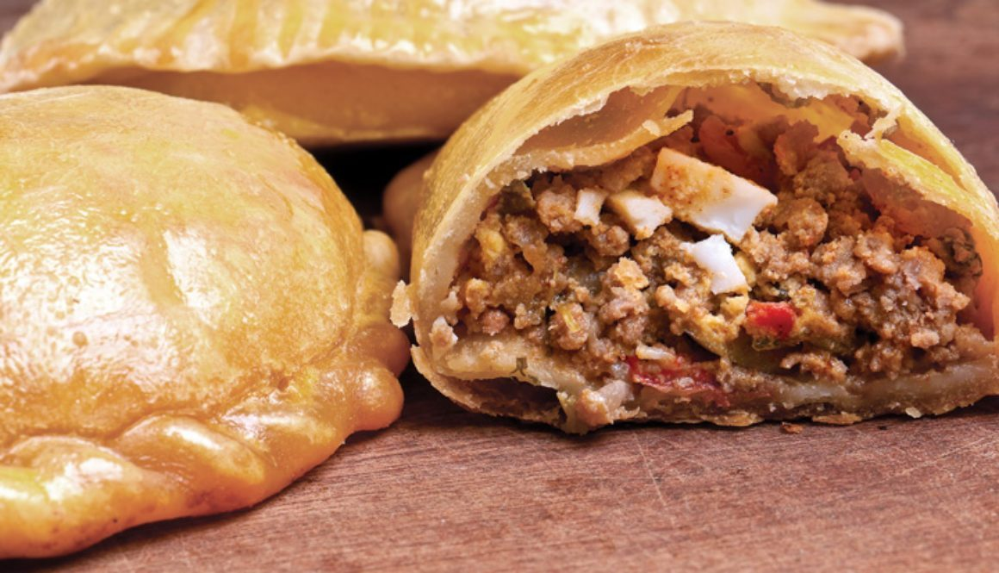

La receta original dicta que esta especie de empanada debía llevar una trenza, con la cual los mineros sujetaban el paste para no ensuciarlo. Además, la masa debía ser flexible para que no se deshiciera en la boca.

Elaboración de Pastes de Real Del Monte PREPARACIÓN
1.Cernir la harina con sal y agregar el huevo, la manteca y la cerveza necesaria para que forme una pasta ligera.
2.Se extiende hasta que quede de un espesor de medio cm. luego, cortar la pasta en forma de ruedas, en el centro colocar el relleno y doblar a manera de empanada, formar la trenza con la mano.
3.Disponer en bandejas engrasadas con manteca, y dejar reposar durante dos horas. Después bañarlas con la leche y cocinarlos en el horno que debe estar a 180º C.
4.Se hace el relleno friendo la cebolla y los chiles cortados en formas de rajas con mantequilla junto a los trocitos de filete o la carne molida y las papas crudas cortadas en cuadritos.
5.Cuando esta bien fritas, añadirle el caldo, la sal y la pimienta. Dejar hervir a fuego lento hasta que espese, luego agregue el perejil picado y servir caliente. PRESENTACIÓN PASTES REAL DEL MONTE Platillo tipo de Real del Monte. Es una empanada hecha a base de harina, manteca y sal.
Relleno tradicionalmente de papa con carne, aunque actualmente existen distintas combinaciones de ingredientes. Fue traído junto con el fútbol por los ingleses en el siglo XIX que vinieron a explotar las minas de plata, en este municipio ya que era un refrigerio para almorzar en las minas debido a su practicidad.
El tradicional paste es de papa, tiene en la orilla una trenza elaborada con la misma pasta y cuenta que esa orilla era la única parte del paste que no comía, debido a que dentro de las minas no se podían lavar las manos, por lo que tomaban el paste por esa orilla y así no lo tocaban con las manos sucias.
pastes
El paste es un alimento tradicional del estado de Hidalgo, México. Su origen se remonta a los mineros de Cornualles, Inglaterra que laboraron en las minas de la región en el siglo XIX, quienes introdujeron el cornish pasty a la región, pero este pasó un proceso de adaptación y modificación, de donde surgió el paste.